K-Means Clustering is a machine learning technique for classifying data. It’s best explained with a simple example. Below is some (fictitious) data comparing elephants and penguins. We’ve plotted 20 animals, and each one is represented by a (weight, height) coordinate.

You can see that the coordinate points of the elephants and penguins form two clusters: elephants are bigger and heavier, penguins are smaller and lighter. Now suppose we’ve got one more datapoint, but we’ve forgotten whether it’s an elephant or a penguin. Let’s plot it, too. We’ve marked it in orange.

If you were to make a guess, you’d say that the orange datapoint probably belongs to an elephant, and not to a penguin. We say this because the orange datapoint seems to belong to the elephant cluster, not to the penguin cluster.
This is the essence of clustering. We take some labelled data — like heights and weights of animals, where each animal is labeled as either a penguin or an elephant. We use an algorithm to figure out which datapoints belong to which (weight, height) clusters. We look at the labels of the clusters to understand what label each cluster corresponds to. Then we take an unlabelled datapoint, see into which cluster it fits best, and thereby assign the unlabelled datapoint a label.
We call the process k-means clustering because we assume that there are $k$ clusters, and each cluster is defined by its center point — its mean. To find these clusters, we use Lloyd’s Algorithm: we start out with $k$ random centroids. A centroid is simply a datapoint around which we form a cluster. For each centroid, we find the datapoints that are closer to that centroid than to any other centroid. We call that set of datapoints its cluster. Then we take the mean of the cluster, and let that be the new centroid. We repeat this process (using the new centroids to form clusters, etc.) until the algorithm stops moving the centroids.[0]
We’ll use k-means clustering on the MNIST dataset of handwritten digits, which consists of 60,000 handwritten digits (0-9) that have been scanned in and scaled to 28 $\times$ 28 pixels. They look like this:

For every digit, each pixel can be represented as an integer in the range [0,255] where 0 corresponds to the pixel being completely white, and 255 corresponds to the pixel being completely black. This gives us a 28 $\times$ 28 matrix of integers. We can then flatten this matrix into a 784 $\times$ 1 vector, which is like a coordinate pair, except for that instead of 2 coordinates it has 784. Now that the data is in coordinate form, we can run k-means clustering. Let’s do it. I will be using Python 2.7 in an iPython notebook.
We start by importing all the libraries we will use.
import random
from base64 import b64decode
from json import loads
import numpy as np
import matplotlib.pyplot as plt
# set matplotlib to display all plots inline with the notebook
%matplotlib inlineNext, we write a function to read in the MNIST data.
def read_in_data(json_line):
"""
to parse the a line of the digits file into tuples of
(labelled digit, numpy array of vector representation of digit)
"""
json_object = loads(json_file)
json_data = b64decode(json_object["data"])
digit_vector = np.fromstring(json_data, dtype=np.ubyte)
digit_vector = digit_vector.astype(np.float64)
return (json_object["label"], digit_vector)Then we use that function to read in the data. We read every datapoint into a tuple containing a label and the data vector.
# Digits is a list of 60,000 tuples,
# each containing a labelled digit and its vector representation.
with open("digits.base64.json","r") as f:
digits = map(read_in_data, f.readlines())Then we split the data into a training and a validation set. We’ll construct our clusters with the training set, and then use those clusters to classify the datapoints in the validation set, i.e. to assign labels to these datapoints. We can then check those inferred labels against the known labels to see how often the algorithm misclassifies a datapoint.
# pick a ratio for splitting the digits list
# into a training and a validation set.
training_size = int(len(digits)*0.25)
validation = digits[:training_size]
training = digits[training_size:]Now we write a function to take a datapoint and display the digit. This is mostly for debugging and checking our results.
def display_digit(digit, labeled = True, title = ""):
"""
graphically displays a 784x1 vector, representing a digit
"""
if labeled:
digit = digit[1]
image = digit
plt.figure()
fig = plt.imshow(image.reshape(28,28))
fig.set_cmap('gray_r')
fig.axes.get_xaxis().set_visible(False)
fig.axes.get_yaxis().set_visible(False)
if title != "":
plt.title("Inferred label: " + str(title))
Now we begin writing Lloyd’s algorithm. There are many libraries that have already implemented this algorithm, but it’s good practice to write it by hand. Notice that the means in k-means clustering comes from taking the mean of a cluster, and relocating the centroid to that mean. A mean, however, is not robust to outliers. It’s possible to take the median instead of the mean — that’s known as k-medians clustering. As usual, there are many variants of this algorithm for various use cases. Following are helper functions for Lloyd’s algorithm. For clarity, I’ve written labelled_x when we can expect x to be a tuple of (label,data), or a list of such tuples.
def init_centroids(labelled_data,k):
"""
randomly pick some k centers from the data as starting values
for centroids. Remove labels.
"""
return map(lambda x: x[1], random.sample(labelled_data,k))
def sum_cluster(labelled_cluster):
"""
from http://stackoverflow.com/a/20642156
element-wise sums a list of arrays.
"""
# assumes len(cluster) > 0
sum_ = labelled_cluster[0][1].copy()
for (label,vector) in labelled_cluster[1:]:
sum_ += vector
return sum_
def mean_cluster(labelled_cluster):
"""
compute the mean (i.e. centroid at the middle)
of a list of vectors (a cluster):
take the sum and then divide by the size of the cluster.
"""
sum_of_points = sum_cluster(labelled_cluster)
mean_of_points = sum_of_points * (1.0 / len(labelled_cluster))
return mean_of_pointsThe main parts of Lloyd’s algorithm: forming clusters and moving centroids.
def form_clusters(labelled_data, unlabelled_centroids):
"""
given some data and centroids for the data, allocate each
datapoint to its closest centroid. This forms clusters.
"""
# enumerate because centroids are arrays which are unhashable
centroids_indices = range(len(unlabelled_centroids))
# initialize an empty list for each centroid. The list will
# contain all the datapoints that are closer to that centroid
# than to any other. That list is the cluster of that centroid.
clusters = {c: [] for c in centroids_indices}
for (label,Xi) in labelled_data:
# for each datapoint, pick the closest centroid.
smallest_distance = float("inf")
for cj_index in centroids_indices:
cj = unlabelled_centroids[cj_index]
distance = np.linalg.norm(Xi - cj)
if distance < smallest_distance:
closest_centroid_index = cj_index
smallest_distance = distance
# allocate that datapoint to the cluster of that centroid.
clusters[closest_centroid_index].append((label,Xi))
return clusters.values()
def move_centroids(labelled_clusters):
"""
returns list of mean centroids corresponding to clusters.
"""
new_centroids = []
for cluster in labelled_clusters:
new_centroids.append(mean_cluster(cluster))
return new_centroidsWe want to repeat the forming and moving steps until the algorithm converges — when the movements of centroids are arbitrarily small. In this case, I’ve chosen to determine convergence by when the movements are zero. This takes longer depending on the size of $k$, so some implementations don’t wait for convergence, and instead run some sufficiently large number of iterations (e.g. 100) to get appropriately close.
def repeat_until_convergence(labelled_data, labelled_clusters, unlabelled_centroids):
"""
form clusters around centroids, then keep moving the centroids
until the moves are no longer significant.
"""
previous_max_difference = 0
while True:
unlabelled_old_centroids = unlabelled_centroids
unlabelled_centroids = move_centroids(labelled_clusters)
labelled_clusters = form_clusters(labelled_data, unlabelled_centroids)
# keep old_clusters and clusters so we can get the maximum difference
# between centroid positions every time.
differences = map(lambda a, b: np.linalg.norm(a-b),unlabelled_old_centroids,unlabelled_centroids)
max_difference = max(differences)
difference_change = abs((max_difference-previous_max_difference)/np.mean([previous_max_difference,max_difference])) * 100
previous_max_difference = max_difference
# difference change is nan once the list of differences is all zeroes.
if np.isnan(difference_change):
break
return labelled_clusters, unlabelled_centroidsFinally, we can wrap the entire procedure up in this function, which will output the optimal clusters and corresponding centroids:
def cluster(labelled_data, k):
"""
runs k-means clustering on the data.
"""
centroids = init_centroids(labelled_data, k)
clusters = form_clusters(labelled_data, centroids)
final_clusters, final_centroids = repeat_until_convergence(labelled_data, clusters, centroids)
return final_clusters, final_centroidsHowever, our centroids aren’t labelled yet. We’ll write a function to label each centroid with the most common label in its cluster.
def assign_labels_to_centroids(clusters, centroids):
"""
Assigns a digit label to each centroid. Note: This function
depends on clusters and centroids being in the same order.
"""
labelled_centroids = []
for i in range(len(clusters)):
labels = map(lambda x: x[0], clusters[i])
# pick the most common label
most_common = max(set(labels), key=labels.count)
centroid = (most_common, centroids[i])
labelled_centroids.append(centroid)
return labelled_centroidsBut we’re not just interested in clustering the known data; we want to classify unknown data using those clusters! So let’s write a function to classify an unlabelled digit, and let’s write another function to classify many of them, so we can get an error rate that tells us about the performance of our algorithm.
def classify_digit(digit, labelled_centroids):
"""
given an unlabelled digit represented by a vector and a list of
labelled centroids [(label,vector)], determine closest centroid
and thus classify the digit.
"""
mindistance = float("inf")
for (label, centroid) in labelled_centroids:
distance = np.linalg.norm(centroid - digit)
if distance < mindistance:
mindistance = distance
closest_centroid_label = label
return closest_centroid_label
def get_error_rate(labelled_digits,labelled_centroids):
"""
classifies a list of labelled digits. returns the error rate.
"""
classified_incorrect = 0
for (label,digit) in labelled_digits:
classified_label =classify_digit(digit, labelled_centroids)
if classified_label != label:
classified_incorrect +=1
error_rate = classified_incorrect / float(len(digits))
return error_rateWe’re done implementing this tool. Let’s test it out. We’ll try clustering with k=16, and we’ll display the 16 centroids.
k = 16
clusters, centroids = cluster(training, k)
labelled_centroids = assign_labels_to_centroids(clusters, centroids)
for (label,digit) in labelled_centroids:
display_digit(digit, labeled=False, title=label) |
 |
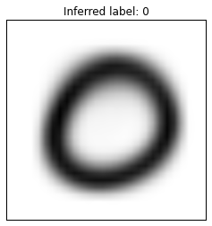 | 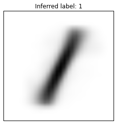 |
 |
 |
 |
 |
| 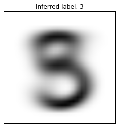 | 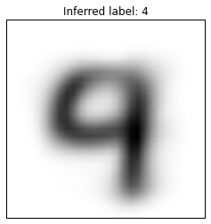 |  |
 |
 |
 |
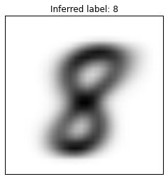 |  |
We see a few interesting results. Most people tend to draw the figure eight the same way, so there’s only one centroid for it. On the other hand, there are three centroids (and clusters) for the figure zero, even though they don’t look very different. The centroids for the figure two reflect that some people draw their twos with a kind of cursive loop, and some people draw their twos without a loop. Notice that there’s no centroid for the figure five. Thus, we never classify any digit as a five.
Earlier, we discussed that the $k$ centroids are initiated at random. This can change the final cluster configuration. To drive this point home, I re-ran the above commands, and got a substantially different set of centroids:
| 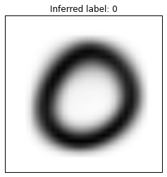 | 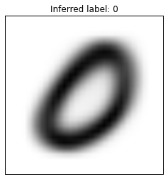 |  |
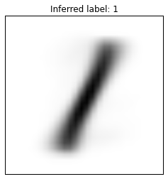 |
| 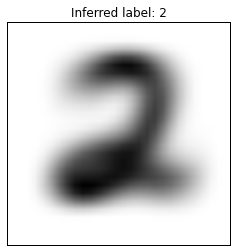 |  |
 |
 |
 |
 |
 |
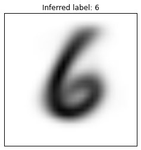 |
 |
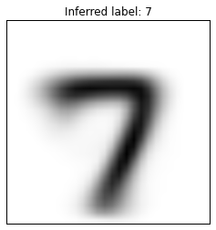 |  |
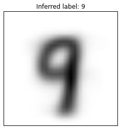 |
In this set, we actually have a “five” centroid. Note that it’s pretty messy — it seems that fives are drawn least consistently, so their centroid (average) is the least clear, and as we saw in the first set, they’re apparently easily misclassified. Beyond that, though the two sets of centroids seem quite different, their error rates in classifying the validation set are not: the first set classifies with an error rate of 0.342, the second with an error rate of 0.304.
Just to go into a bit more detail, let us look at classification at the level of an individual cluster. I used the following snippet of code to see which digits are classified into the “two” cluster from the most recent clustering:
twos = []
frequency = {x:0 for x in range(10)}
for (label,digit) in validation:
inferred_label = classify_digit(digit, labelled_centroids)
if inferred_label==2:
twos.append(digit)
frequency[label] +=1The result is strikingly good, with a very low error rate:
| Digit | Frequency Count | |
| 0 | 1 | |
| 1 | 2 | |
| 2 | 1018 | |
| 3 | 39 | |
| 4 | 0 | |
| 5 | 1 | |
| 6 | 1 | |
| 7 | 4 | |
| 8 | 7 | |
| 9 | 1 |
On the other hand, if we run the same code to see which digits are classified into the “nine” cluster, the results aren’t as good.
| Digit | Frequency Count | |
| 0 | 1 | |
| 1 | 11 | |
| 2 | 19 | |
| 3 | 69 | |
| 4 | 255 | |
| 5 | 88 | |
| 6 | 2 | |
| 7 | 180 | |
| 8 | 68 | |
| 9 | 448 |
I find it very surprising that so many threes are misclassified as nines: as far as I can recall, threes and nines look nothing alike! Let us take a look at 16 digits, randomly selected from the ones classified as nines:
 |
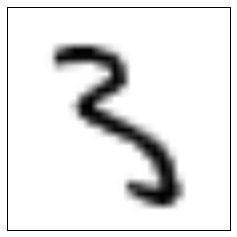 | 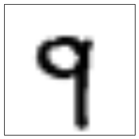 |  |
 |
 |
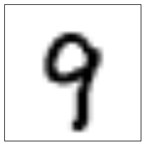 |  |
 |
 |
 |
 |
 |
 |
 |
 |
Now let us iterate over various values for $k$, and find how the performance improves as we use more clusters.[1] However, since Lloyd’s algorithm’s time complexity is polynomial in $k$ and I did not constrain the number of iterations, I only ran one trial for a large $k$ (of 100).
error_rates = {x:None for x in range(5,25)+[100]}
for k in range(5,25):
clusters, centroids = cluster(training, k)
label_centroids =assign_labels_to_centroids(clusters,centroids)
error_rate = get_error_rate(validation, label_centroids)
error_rates[k] = error_rate
# Show the error rates
x_axis = sorted(error_rates.keys())
y_axis = [error_rates[key] for key in x_axis]
plt.figure()
plt.title("Error Rate by Number of Clusters")
plt.scatter(x_axis, y_axis)
plt.xlabel("Number of Clusters")
plt.ylabel("Error Rate")
plt.show() Let’s zoom in on the left side of the image:
Let’s zoom in on the left side of the image:

We can see that increasing the number of clusters steadily improves the error rate, and that with k=100, we get an error rate around 0.12. It is conceivable that we could further decrease error with larger k. We can also make many heuristic improvements to k-means: for example, the weakness of randomly selecting initial centroids, which may lead to suboptimal clusterings, is addressed by the k-means++ algorithm.
Nonetheless, despite many possible improvements, it is rare to find a dataset in which k-means is competitive with more advanced machine learning techniques. Convolutional neural networks can classify the MNIST data with error rates below 0.01.
However, for purposes of education, k-means clustering is a great way to introduce machine learning. It is technically reasonably accessible, and it illustrates in broad strokes how machine learning and data mining techniques are used in practice.
This project was inspired by a homework assignment in John Lafferty’s Large-Scale Data Analysis course that I took at UChicago in the Spring of 2015. I collaborated with Elliott Ding on that assignment. In the class, we used Apache Spark and a map-reduce framework on AWS to take advantage of parallelization. To make the algorithm more accessible, I’ve rewritten the code for this article to not use distributed systems.
A GitHub repository containing the iPython notebook, dataset, etc. is available here.
[0] We say that the algorithm converges when the centroids cease moving. Note that Lloyd’s algorithm converges only to a local optimum. Lloyd’s algorithm does not guarantee finding a global optimum. This can be a critical pitfall.
[1] Using more clusters raises the perennial danger of overfitting.
This work is licensed under a Creative Commons Attribution-NonCommercial-ShareAlike 4.0 International License.